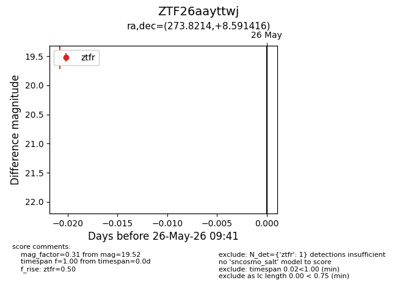
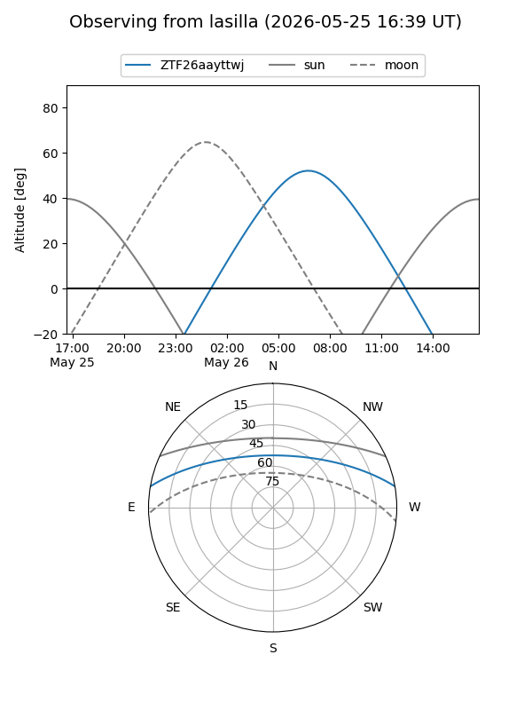
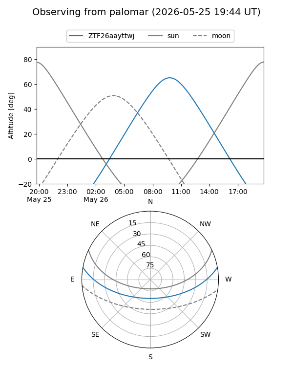

ZTF26aayttwj
Target ZTF26aayttwj at 2026-05-26 09:43
Aliases and brokers:
lsst-FINK: link
lsst-Lasair: link
lsst-ALeRCE: link
ztf-FINK: link
ztf-Lasair: link
ztf-ALeRCE: link
alt names
ZTF26aayttwj (ztf,fink_ztf)
Coordinates:
equatorial (ra, dec) = 273.8214,+8.59142
equatorial (HMS+DMS) = 18:15:17.14,+08:35:29.10
galactic (l, b) = (36.5722,+11.90902)
Flags:
Photometry:
last ztfr=19.52
1 ztfr detections
Lightcurve

Visibility


Additional plots